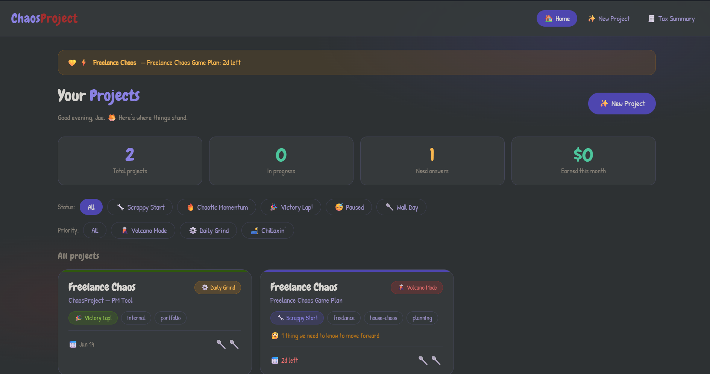
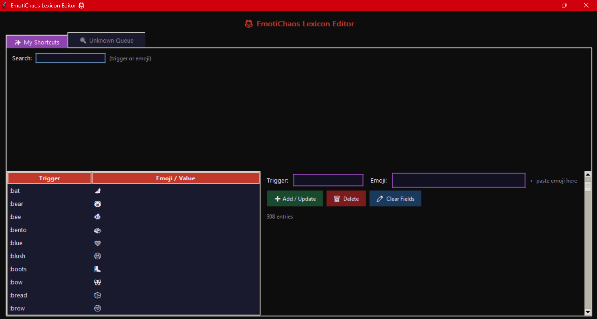

✦ Freelance Chaos ✦
Jae is neurospicy and collaborates with AI to make fun things that just work.
Real tools. Real origin stories. Real "wait, this could work for me too" energy.
What it does
A fully functional calculator that also has opinions. Cozy cottage aesthetic, Chewy font, dark mode, and flavor text for every button — including per-number messages that fire at 20% chance so they stay surprising. 6 is the number of legs on a beetle. 8 is sideways infinity. Dividing by zero is illegal in this house.
Why we made it
Jae wanted something pretty even though her phone has a calculator. That's a completely valid reason to build something.
How it adapts
Swap the flavor text and color palette for any brand voice. A tip calculator for a restaurant, a quote estimator for a shop, a whimsical tool for literally any small business that wants to be remembered.
What it does
A grocery restocking tracker built around exactly how Jae's brain shops. Flavor counter cards for snacks and drinks, scheduled staples with auto reorder dates, and a full pantry toggle so nothing gets bought twice. Works offline, works on phone, zero setup.
Why we made it
Generic grocery apps assume you shop like a neurotypical person. This one doesn't.
How it adapts
Restock trackers for small studios, craft supply inventories, restaurant prep lists, or any situation where "I swear we had more of that" is a recurring problem.
What it does
A personal AAC-style communication and morning decisions tool. Stackable buttons across five categories — needs, feelings, body stuff, lupusy feels, love signals — with a sub-option mechanic and a message tray that copies with one tap. Built for nonverbal days.
Why we made it
Jae noticed she was browsing AAC boards on Amazon and went "…except I'm the only physical body in the apartment BUT 🤔" and figured out the digital version. That's just correct thinking.
How it adapts
Custom communication boards for neurodivergent individuals, caregiver check-in tools, or any situation where finding words is the hard part and the button should just exist already.
What it does
A full point-of-sale system in a single HTML file. Menu builder, order mode with BOOP screen, §dollarbuck pricing, barcode receipts with randomized funny words, and inventory tracking that deducts on every sale and warns before you run out.
Why we made it
Built for House Chaos tea parties. But genuinely — four lines of code away from being a real POS for any small event, pop-up shop, or market stall.
How it adapts
Any small vendor who doesn't want to pay Square's fees for a craft fair. Custom menu, custom currency name, custom receipt words. Zero server required.
What it does
A two-tracker work metrics dashboard. Appointment rate lifecycle (Scheduled → Kept / No-show / Recovered / Exempt) with live percentage, warning states, and chaos alerts. Points tracker with tap-to-highlight calendar, daily pacing line, and monthly history. Everything exports to CSV.
Why we made it
Jae reverse-engineered her employer's reporting logic mid-workday to build a tracker that actually matches how the numbers get calculated. Then she built it anyway because the official tool was bad.
How it adapts
KPI dashboards for sales teams, freelance project rate trackers, or any role where someone is quietly doing mental math on a spreadsheet that shouldn't need to exist.
What it does
Parses appointment booking emails and generates pre-filled SMS reminders and database notes in seconds. Three modes, appointment subtype toggles, 27-person teammate dropdown, punched-up Gen Z SMS templates that actually sound like a human. Cut prep time from 45 minutes to 10.
Why we made it
Because Jae was spending 45 minutes every morning on something that should take 10. She built the solution herself and launched it to her team same day.
How it adapts
Any team that sends templated communications from structured data. Appointment reminders, onboarding messages, follow-up scripts — built once, used every day.

What it does
A full local project management tool built for freelance work. Four pages — dashboard, project form, detail view, tax summary. Spoon-based Wall Day filtering, scope gates that prevent premature momentum, step checklists with energy levels, and a "I got paid!" button. Built in one evening with zero bugs.
Why we made it
Started a session on a warpath about a bad job. Ended with "this feels doable now." That's the whole point.
How it adapts
Freelancers, solo contractors, or anyone juggling multiple projects who needs pacing-aware tooling that won't punish them for having a Wall Day.

What it does
A system-wide emoji hotstring tool. Type :ghost anywhere, get 👻. Fires in any app, any text field. Comes with a live lexicon editor — search, add, edit, delete, and a queue tab that shows pending expansions in real time. Silent unknown queue, smart time colon guard, auto emoji library lookup.
Why we made it
Originally built by Gem (Gemini AI) for Windows. Upgraded together with three key fixes that made it actually pleasant to live with every day.
How it adapts
Text expansion tools for anyone who types the same things constantly — custom shortcuts, company-specific phrases, accessibility helpers for people who need faster input.
What it'll do
A no-code tool for building simple, beautiful standalone web pages by clicking buttons. The idea is still taking shape — but if you've ever needed a simple landing page and didn't want to learn HTML to get one, this one's for you.
Why we're making it
Because having a good idea shouldn't require knowing how to code. We believe in building tools that meet people where they are.
Want to know when it's ready?
Keep an eye on housechaos.org. Or just ask. We're not hard to find. 🦊